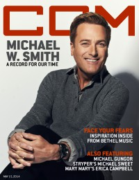

CCM Digital, 15 May 2014
| Cover |
|---|
|  |
 Online Exclusively Online Exclusively |
| Writers in this Issue |
| Argyrakis, Andy Aspinwall, Grace S. Conner, Matt Geil, Mark D. Greer, Andrew Lusk, Caroline Viola, Frank |
Michael W. Smith
Cover Feature:- "Sovereign State" by Caroline Lusk
- "You Make Me Brave: Embracing the one who drives out fear" by Mark D. Geil
- "Mountain Climbers: Michael Gungor Explores New Ground on His Latest" by Caroline Lusk
- "His Strypes are Showing" by Andy Argyrakis, Matt Conner
- "Two Become One: Mary Mary's Erica Campbell Goes Solo and Strikes Gold" by Andrew Greer
- "No Retreat: Newcomer Tyler Newberry is Armed and Ready" by Matt Conner
- Michael W. Smith - Sovereign by Grace S. Aspinwall
- Jason Bare - Love Is Alive by Grace S. Aspinwall
- Anthony Evans - Real Life, Real Worship by Andrew Greer
- Michael Sweet - I'm Not Your Suicide by Andy Argyrakis
- The Overseer - Rest & Let Go by Matt Conner
- Jonny Diaz - Let It Fly by Grace S. Aspinwall
- various artists - WoW Gospel the 2000s by Andrew Greer
- Erica Campbell - Help by Andrew Greer
- Charlie Peacock - Lemonade by Andy Argyrakis
- Andy Griffith - Icon by Andy Argyrakis
- "Proof of Life Tour, House of Blues, Chigago, IL" by Andy Argyrakis
- "Jesus Now: an excerpt" by Frank Viola
- "GMA Honors: A Historic Evening of Tribute, Passion, and Song" by Caroline LuskGMA Hall of Fame ceremonies
© 2011 CMnexus. Last updated September 2019. Contact: editor -AT- cmnexus -DØT- org About